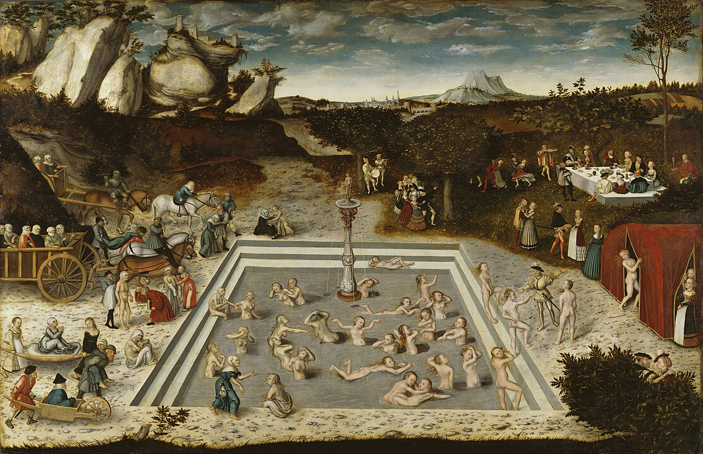

Das Cranach Digital Archive (CDA) ist ein internationales Forschungsprojekt, das sich der Dokumentation und Erforschung der Werke von Lucas Cranach d. Ä. (1472–1553) und seiner Werkstatt widmet. Es bietet eine umfassende digitale Sammlung hochauflösender Bilder, wissenschaftlicher Analysen und historischer Dokumente zu seinen Gemälden. Ziel ist es, Kunsthistorikern, Restauratoren und der Öffentlichkeit einen zentralen Zugang zu detaillierten Informationen über Cranachs Werke zu ermöglichen und den Austausch wissenschaftlicher Erkenntnisse zu fördern.
Gemälde, Archivalien und Literatur
